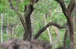
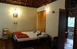
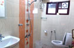
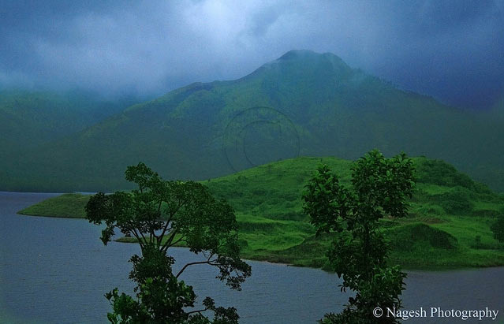
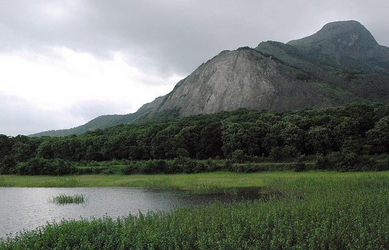

Trip Overview
India Untravelled invites you to leave behind Kerala’s tourist circuit and discover the picturesque countryside in the north of the state. Pamper yourself in a Kerala of virgin backwaters, misty tropical forests, and sandy white beaches caressed by the waves of the Arabian Sea. Experience life in a postcard bamboo village, indulge your taste buds in the delicious local cuisine, wander along dense coffee, rubber and coconut plantations, and treat yourself to the warm hospitality of your host families. On this trail, you witness the many faces of Kerala, and immerse yourself in its culture, traditions and crafts.
This itinerary takes you to small towns and villages in Wayanad and Kasaragod, where local families host you. You ditch popular tourism destinations in the south of the state.
The Best Kept Secrets of Kerala itinerary starts on a coffee plantation among the tropical forests of the Wayanad district, and continues in a small village nestled in the Western Ghats and end your journey on a private island by a gorgeous stretch of the backwaters.
Please email us at untravel@indiauntravelled.com to plan and book your travels.
Trip Highlights
The Best Kept Secrets of Kerala trail lets you savor a range of experiences, customized to your interests.
You can rejuvenate by the virgin beaches, take long walks along the scenic countryside, and lie in a hammock watching fishing boats traverse the backwaters. You can mingle on the dinner table with your host families, spend hours talking about life in the region, or try your hand at pruning coffee leaves and helping farmers on their rice paddies.
Adventure enthusiasts can trek through the core zone of the Muthanga Wildlife Sanctuary where big cats and wild elephants are often spotted, cycle through the postcard countryside of Wayanad, climb the spectacular slopes of the Chembra Peak, and get lost in the prehistorical Edakkal Caves.
Nature lovers can spend hours watching eagles and other birds by the backwaters, picnic at the Kuruva islands in Wayanad, spot dolphins at the beach in the early mornings, and explore the coconut countryside on a fishing boat or a houseboat.
Culture seekers can participate in music and dance performances by village artisans, shop for bamboo handicrafts in Bamboo Village and interact with the fishing and mussel farming communities by the backwaters.
Please email us at untravel@indiauntravelled.com to plan and book your travels.
Brief Itinerary
Day 1 & 2: Homestay at a Coffee Plantation in Wayanad
The Best Kept Secrets of Kerala itinerary can start in Calicut or Bangalore, both of which are well connected by international flights and trains, and have frequent buses plying to Wayanad. Car transfers can also be arranged
from other parts of Kerala.
Wayanad’s hilly district is a treat for nature lovers, adventure enthusiasts and photographers, with its dense tropical forests interspersed with plantations of rubber, coconut, coffee and tea. Your first homestay is located
in a small town in Wayanad, where you stay on a coffee plantation with a native Wayanadi family, in a bamboo cottage raised on stilts.
Spend your two days here getting to know your host family, indulging in delicious home-cooked North Kerala cuisine, and strolling along or volunteering in the coffee and rubber plantations in your backyard. Spend some quiet
time in your balcony, hearing the orchestra of birds, and spotting fireflies in the dark.
Explore the hilly treasures of Wayanad by car. You could choose to step back in time at the pre-historical Edakkal Caves, visit one of the last standing tribal settlements at Chekadi, spend a late night camping at a forest
settlement, or climb the spectacular Chembra Peak, home to a heart-shaped lake. You can also opt for an early morning deep forest trek in the core zone of a wildlife sanctuary, or a jeep safari through the forest.
Days 3 & 4: Traditional Village Homestay in Wayanad
Drive through the scenic terrain of Wayanad (1-1.5 hours), to the small picturesque village of Thrikkaipetta, nestled in the Western Ghats and surrounded by rice paddies and banana & coconut plantations. The craftsmen
and women of Thrikkaipetta specialize in bamboo handicrafts, earning it the nickname “Bamboo Village”.
Your next homestay is with a native family in a traditional village home at Bamboo Village, where you get a cosy room to yourself, equipped with basic urban facilities including a western-style bathroom. Indulge in the warm
hospitality of your hosts, soak in the spectacular landscape of the village, and make yourself at home on the postcard countryside of North Kerala.
Spend your two days experiencing village life, interacting with your host family and other residents of the village, strolling around the village plantations, and hiking in the surrounding hillocks. Your host family will be
happy to have an evening of informal music and dancing for you, sharing their traditions and folklore with you, and learning about yours. If you’re travelling in a big group, you could also opt for a cultural folk performance
by a group of village artists and shake a leg with them.
If you feel you haven’t seen enough of Wayanad in the first two days, you could sign up for a half day or full day cycling trip through the sunny plains, fields, lakes and temples of South Wayanad.
Days 5 to 7: Private Island Stay in Kasaragod
You spend your last three nights in a small piece of paradise, in a laterite stone cottage with an open-rooftop shower and traditional Kerala-style tiled roof, overlooking an expanse of backwaters as open as a river, dotted on the far end with palm trees. You can spend your time interacting with your personable host, treating yourself to finger-licking good food, and lounging in your balcony or on one of many hammocks across the island, soaking in the spectacular views of the backwaters and watching fishing boats go by.
You can swim in the backwaters (they are that clean!), go on a boat ride along the coconut-fringed countryside, and indulge in a beach picnic on virgin sandy beaches across the coast. You can opt for a traditional Ayurvedic massage on the island, or take a trip to see mussel farming in the surrounding waters.
Please email us at untravel@indiauntravelled.com to plan and book your travels.
Costs
Twin sharing: INR 22,000 per person
Solo traveller: INR 28,500 per person
Inclusions:
- Accommodation from days 1 to 7.
- Breakfast & dinner on days 1, 2.
- All meals on days 3, 4, 5, 6 and 7.
- Pick-up from & drop to Wayanad bus stop.
- Transfers to & from Bamboo Village.
- Pick-up from & drop to Cheravattur bus stop.
- Boating & beach picnic on days 6 and 7.
- Taxes where applicable.
Please email us at untravel@indiauntravelled.com to plan and book your travels.
Location:
This trail starts in Wayanad. The nearest airport and train station are at Calicut (Kozhikode); 3 hours drive or bus ride to Wayanad. Bangalore is located 6-7 hours by bus or car to Wayanad.
Best time to visit
- All year round.
- Winter (November to March): Most pleasant weather; sunny during the day, cool at night.
- Monsoon (July – August): Heavy downpours, spectacular greenery and sunsets.
- Summer / Spring / Autumn (March to June and September to October): Pleasant, sunny days, warm nights, clear sunsets, lots of greenery.
Things to note
- Fitness: The homestay is a perfect getaway for people of all ages and fitness levels – you can make your stay as relaxing or as active as you like.
- Food: Both vegetarian and non-vegetarian food is available on this trail.
- Cash and ATMs: Only cash is accepted at the homestays. ATMs are located close to bus and train stations.
- Bathrooms: Each room comes with an attached bathroom, running or bucketed hot water and western style toilets.
- Electricity: Power cuts are infrequent, but please be prepared for them by carrying torches and spare batteries as needed.
- Phone, Internet and TV: There are no TVs in the rooms, but there is plenty of natural beauty to keep you entertained. Most phone networks work well on this trail and Wifi is available in the common areas of the coffee plantation in Wayanad, Kannur and Kasaragod.
- Pets: Not allowed.
- Alcohol: Not provided. Guests can carry their own on prior request.
Checklist
Leave your pre-conceived notions behind, travel with an open mind, and you'll be pleasantly surprised with what you find.
- Sunscreen, sunhat
- Walking shoes
- A warm jacket if travelling in winter
- Umbrella, raincoat in the rainy season
- Insect repellant if you are prone to mosquito bites
- Books to read and write, stationery to paint and draw - anything you love to do and never get the time for
- Binoculars for bird watching
- Cosmetics you need
- Prescription medicines, if any
- Camera and batteries / charger
Please email us at untravel@indiauntravelled.com to plan and book your travels.
Gallery
Wayanad
-  A family of wild elephants spotted from the main road
-
 Bamboo homestay on a coffee plantation
Bamboo homestay on a coffee plantation - Host family
-
Road to heaven.
Photo from Flickr Creative Commons -
 Tea plantations along the western ghats. Photo by Dhruvaraj S.
Tea plantations along the western ghats. Photo by Dhruvaraj S. -  Interior of bamboo homestay
-  Bathroom at the cottage
-
 View from the balcony of the cottage
View from the balcony of the cottage -  Wilderness. Photo from Flickr Creative Commons
-  Wayanad in the rains.Photo from Flickr Creative Commons
- Teak forests on the way to Chekadis tribal settlement.Photo from Flickr Creative Commons


Bamboo Village, Wayanad
-
 A self-designed homestay at Bamboo Village
A self-designed homestay at Bamboo Village -
 Rice paddies & the Western Ghaats
Rice paddies & the Western Ghaats - The road to the mountains
-
.jpg) Guest room
Guest room -
.jpg) Guest room
Guest room - Bamboo craftswoman at work
- Bamboo mats on sale at the Bamboo Handicraft Unit
-
 The hill country of Wayanad
The hill country of Wayanad -
 Bath Room
Bath Room


.jpg)
.jpg)


{kind=link}
{kind=link}
{kind=link}
{kind=link}
{kind=link}
{kind=link}
{kind=link}
{kind=link}
{kind=link}
{kind=link}
{kind=link}
Kasaragod
- Private island along the backwaters of North Kerala
- Backwaters pond
- Least travelled stretch of the backwaters in Kasaragod
- Monsoon mist
-
 Picnicking on the beach
Picnicking on the beach - Watching fishing boats go by
- Life by the backwaters
- View from the balcony
- Sunset on the backwaters. Photo from Flickr Creative Commons
{kind=link}
{kind=link}
{kind=link}
{kind=link}
{kind=link}
{kind=link}
{kind=link}
{kind=link}
Please email us at untravel@indiauntravelled.com to plan and book your travels.
Reviews
Firstly, I have loved all the trips that I did with India Untravelled (Sikkim, Darjeeling, Spiti and Kerala), you guys do it great!
I loved every bit of Kerala itinerary - Each of the three locations were distinct and had its own beauty and story to tell. I loved exploring, village walking with absolute no fear or anxiety of being a solo traveler. Homestays (including Oyster Opera) were absolute delight with great hosts, delicious food and always willing to help. They made me feel so comfortable and guided to make the best of the three days. The only suggestion I would have is to the itinerary - the travel from Bamboo Village to Kasargod is too long (I got there in 6 hours), some flexi option if the travellers dont want to travel that far for the next destination. May be something in Kannur and Kasargod together. Or even combine Madikeri, Kannur and Kasargod. When I reached Bamboo Village, there were no guides available those two days. Although I wasn't sure, where to start, eventually I loved exploring the place on my own and dont have any complaints around it. Thank you so much for helping plan this on such a short notice. I look forward to many more trips in the future.
~Hema KR, travelled Solo in December 2017
"We had a really wonderful time on our trip through Kerala. There is so much to say, but I'll highlight a few of the best parts --
- The food! Especially as vegetarians/vegans, we were blown away by how great we ate throughout the trip. Oyster Opera was particularly amazing, as was the homecooked meal at our stay in Bamboo Village.
- The people! It was such a pleasure to get to meet and speak with so many different and interesting people throughout the trip. Staff, guides, other guests, and local residents who dropped by were all a real pleasure to get
to know. I enjoyed picking our hosts brains in Bamboo Village and Treasure Trove about village life and the agricultural sector.
- The beach. Both Oyster Opera and especially the Kannur beachstay were peaceful and relaxing beach getaways. The beaches were clean and the water was warm.
- When we first got to Bamboo Village, we were a bit nervous there wouldn't be much to keep us occupied. But then we took a full day tour with a local guide who was amazing -- he knew every tree and plant, took us to a great
little coffee shop, and introduced us to the folks who ran the Bamboo Village work. It exceeded our expectations.
- The coffee. I don't even drink coffee, but I couldn't get enough, especially at our two stays in Wayanad. Amazing."
~Garrett and Jane, travelled in January 2016
"Thanks so much for organizing such a lovely trip for us. The hosts at both the places were truly delightful people to meet. My family had a great time. Thanks for all your planning."
~Rachna, travelled with her family to Wayanad and Kasaragod, in Sept 2014.
"Thank you for arranging this trip, we had a great time in Kerala. This program was exactly what we were looking for. Here's a quick rundown on our experiences…
Meenangadi
Sunil and Reena were great hosts. The cabins were very nice and Reena's cooking was excellent. We found them welcoming, happy to talk about the area and their lifestyle, and helpful in arranging transportation to some of the
surrounding areas (Edakkal Caves, Kuruva Island, Meenangadi town). We would recommend this place to our friends and family.
Thrikkaipatta
We had a mixed experience in Thrikkaipatta. We really liked the tour guide Anoop and spent two days with him. We walked around the town with him on the first day and on the second day we climbed the peak in Thrikkaipatta (the
1,500 m peak). We found him easy to get along with and willing to spend as much time with us as we wanted. He was also very knowledgeable about the village and the area. Our homestay, however, did not meet our expectations. We
found it difficult to develop a relationship with Sumesh and thought he was overly promotional with the "Bamboo Village" project. He seemed more interested in advancing this initiative and promoting the village than making us feel
welcome. This made us feel uncomfortable with our stay. We also felt that the food was merely "okay" (the rice and other food was cold) and unfortunately not up to the hygienic standards of the other homestays. Also: they didn't
have bicycles and Sumesh said that other people had requested this. This was one of the activities that we saw on your itinerary and were looking forward to doing. We would recommend that our friends/family spend time in Thrikkaipatta,
but we would not recommend this homestay.
Kannur
As you said, we did leave one day early from Thrikkaipatta when we found out that family friends were in town and lived in Kannur. We ended up staying at our friends' house while we were in Kannur but spent an afternoon and
an evening at Blue Mermaid. The property and beach were beautiful and Indu's cooking was very good. We found the experience more touristy and slightly less personal than in Meenangadi, but overall our time there was comfortable.
Cheruvathur
We had a very good experience at Oyster Opera and found Mr Gul very welcoming. It was a nice peaceful resort and good way to end the trip. We would recommend to friends/family.
Overall, we thoroughly enjoyed the trip and had a great time experiencing the people, food, lifestyle, culture and landscape in Kerala."
~Chris and Priyanka, travelled in Feb 2014.
"Thank you immensely for arranging such an amazing trip through Kerala. I had a blast and thoroughly enjoyed my stay everywhere. Each place was unique and absolutely amazing. You absolutely picked the most perfect places everywhere."
~ Dushyant, travelled solo in January 2014.
"The trip was great. Thanks for collating such a brilliant itinerary. I could do hills, waterfall, beach, back waters all in one-shot. Almost a Perfect vacation…
The home stays are really good and well chosen. We received a warm welcome at all the places with no glitches… The hosts are attentive to all the requests throughout the stay.
I would specially mention Mr Gul from Oyster Opera as my son got sick and he and his staff was very considerate and made sure I got whatever was required to attend him.
Strangely I got a couple of questions from hosts if I work with you folks.
Perhaps both of you made definite they I am taken care… Thank you.
Appreciate your patience in setting up my itinerary and answering all my queries.
Would certainly love to do more of the India untraveled…"
~Bobbie, travelled with her son in December 2013.
"Louis and I are safely home and wanted to say thank you for organising the second part of our wonderful Kerala experience, we absolutely loved it.
Our first homestay in Bamboo village was great with a really lovely family. The food, cooked by the grandmother, was absolutely delicious and was one the highlights of the trip. Anup, our guide around the plantations was very knowledgeable and friendly and added a huge amount to our stay. Just to note our hosts asked for feedback and I suggested that 100% cotton sheets are very much appreciated by travellers from Europe.
The next stop at Treasure Trove was charming again, our room comfy and the food delicious, we really enjoyed going on a walk with our host Sunill and we took a trip up to the caves - a proper Indian family experience.
Sadly as you know due to the travel distances we didn't get to Kasaragod but ended our stay at The Blue Mermaid. It might be worth mentioning that it felt a little more like a small hotel than a homestay with several other guests, not a problem but unexpected. Our hosts were very friendly and helpful (as was everyone on our entire stay - the welcome we got everywhere was humbling!) The food was fine but nowhere near as good as our other stays however it was an lovely location right on the beach and backwaters.
As a final note I was wondering if it might be useful for your travellers to have a little more information prior to leaving in order to prepare and look forward to their trip. I would have liked to have had some advice about tipping and other small things such as we learnt about not to put loo paper in the toilet - sounds obvious now but didn't occur to me until there! The only other thing is Louis and I had no photocopies of our passports and visas which was a problem at Bamboo Village as our hostess had to spend a day at a police station sorting it out.
Wishing you all the best for 2014 and again thank you.
~ Sophie, travelled with her son in December 2013.
"I had a really fantastic time on my trip! Each home stay was quite unique and it gave me the chance to see different sides of Kerala, the backwaters, tea plantations etc. All the hosts were so hospitable and went to great efforts to make me feel safe and comfortable, which was especially helpful because I was a bit apprehensive about travelling alone! I felt that that Bamboo Village home stay was maybe not of the same calibre as the other home stays, where I felt a bit more comfortable making my own plans and had my own space. But certainly it was an interesting experience! I would have found it very helpful to have an estimate for how much money to take with me (both as a general kitty and also for transport eg car transfers), especially given that ATMs are few and far between! Admittedly I should have asked, I didn't even think of it..! But overall very well organised and I had such a great time, so thank you!!"
~ Shweta, travelled solo, in October 2013.
"Besides the beaches, sunrises and sunsets, I will remember the trip more for the hospitality of our cheerful and chatty host, Indu. Her willingness to help stood out during the entire duration of our stay, all we had to do was
give her a shout. Since we are pure pure vegetarians, we had some problems with non veg food being prepared in the same kitchen, but she was kind enough to listen us out and prepare dishes according to our wishes.
Overall, the trip was wonderful and one that was long due for us, hence we enjoyed it even more. We payed a visit to the nearby temples and had nice walk-throughs, through the local settlements of the town. Missed watching
theyyam and backwater boating though, will keep these and more for next time.
Thanks once again for everything, also for extending the trip, this is one gesture we highly appreciate and are grateful
for. "
~ Arti, travelled with her father in March 2013.
"Wayanad: Our hosts, Sunil and Reena and their two beautiful children were warm and hospitable. Food consisted of simple but delicious Kerala food served in the main house. The cottages, built by Uravu, a small scale bamboo industry in Wayanad, have all the modern amenities and a nice bamboo balcony surrounded by a canopy of trees where one can just sit and listen to the chirping of the birds and see the sunlight filtering through the trees.
Kannur: The golden sands and the sparkling sea welcomed us and we spent most of the day at the beach. The food at Blue Mermaid was authentic, lip smacking Kerala food and had a decent spread.
Kasaragod: The beauty of the landscape cannot be described in words and the photos possibly depict a little of what we actually saw. The cottage with its stone steps almost kissing the backwaters, with a lazy hammock swinging between coconut trees was a dream come true."
~ Asha, travelled with her family in October 2012. Read more about her trip on her blog post:
A vacation in the mountains, seas and backwaters
"I have seen elephants, swam underneath a waterfall, walked around a lake, and watched the sunset over the dam. The country is alive with colour! I am very happy to be here... these hidden gems and locations in India really open my eyes to how beautiful the country is."
~ Kellie, travelled solo in October 2012.
"As with any genuinely engaging place, you can spend a week in each of these locations alone and still barely scratch the surface of what Northern Kerala has to offer.
The coffee plantation itself is a fun place to hang around; you're housed in a bamboo cottage, by the excellent host Reena, treated to a cicada orchestra and can even take in the coffee harvesting if the right season. In Charvattur,
near the town of Kasargod, the very personable host, G. S. Gul offers 10 cottages, including two houseboats, spread out across 24 acres of backwater. You could go canoeing in a pond built specially for it, be ferried out to a comfortable
area to swim in the waters or even visit the beautiful Bekal fort nearby, but all of those activities are simply an excuse to work up an appetite for the incredible food on offer here. "
~ Rohan Venkat, travelled with his family in August 2012. Read more about his trip in his Mail Today story,
Falling Off The Map in Kerala.
To feature your reviews about this trip, please email them to untravel@indiauntravelled.com
Please email us at untravel@indiauntravelled.com to plan and book your travels.
Responsible Travel
How this trip makes a difference:
- All accommodations on this trail are built with locally sourced materials, in indigenous architectural style, and by local craftsmen.
- All accommodations on this trail are homestays, giving you a chance to interact closely with your hosts and understand the culture and traditions of the region.
- The homestays on this trail are either run by native families, or employ staff from the local village communities to look after travellers, creating an alternate source of income through tourism.
- Host families on this trail are involved in local community initiatives, including supporting local crafts-persons, generating sustainable livelihood alternatives, and pioneering mussel farming in the region.
- All food provided in the homestays is freshly prepared in the host kitchen, using locally grown and locally sourced ingredients.
- The revenues generated from this trip are reinvested to further the cause of responsible travel in the region and in India.
How you can make a difference on this trip:
- While staying in the homestays, take the time to interact with your hosts and think of yourself as a guest at a family home. Please don’t expect room service!
- Carry a good water bottle and ask to refill drinking water at the homestays. Refrain from buying numerous plastic mineral water bottles.
- Pack your bags with environmentally friendly things. Carry as little plastic as possible.
- Do not leave behind any non-biodegradable waste. Carry batteries and other toxic waste back to the cities where waste management is in place.
- What you wear has an impact – dress ethically and appropriately.
- Respect the local culture and refrain from physical intimacy in public places.
- Local food is great. Try it as much as possible and avoid packaged food. Ask for modifications in the food according to your taste, instead of wasting it.
- Avoid excessive consumption of alcohol and refrain from drugs, especially in public places.
- Seek permission before photographing people, so their privacy is respected.
- Do not pluck any medicinal plants & flowers, and do not disturb the wildlife.
Please email us at untravel@indiauntravelled.com to plan and book your travels.
Please email us at untravel@indiauntravelled.com to plan and book your travels.